Mô phỏng chu trình dữ liệu, kiến trúc vi mô và kiểm chứng phần cứng bộ tăng tốc tâm thu 64 PE cho luận văn tốt nghiệp
Von Neumann CPU vs. Systolic Array
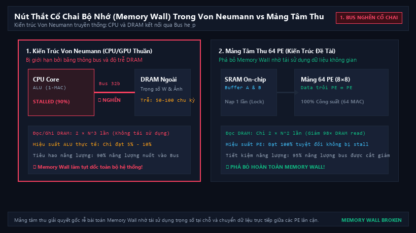
🔍 Phóng toCPU Von Neumann bị nghẽn bus và stall 90% thời gian khi đọc/ghi DRAM ngoài. Mảng tâm thu phá bỏ Memory Wall nhờ tái sử dụng trọng số tại chỗ và PE-to-PE routing.
Generic Deep Learning Pipeline
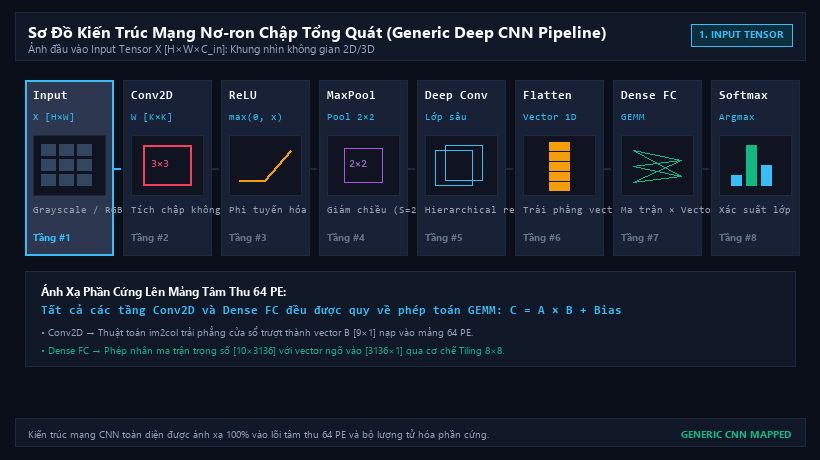
🔍 Phóng toDòng chảy toán học xuyên suốt của mạng nơ-ron chập sâu: Input Tensor → Conv2D → ReLU → MaxPool 2×2 → Deep Layers → Flatten 1D → Dense FC GEMM → Softmax Argmax.
PicoRV32 + AXI4-Lite + Accelerator
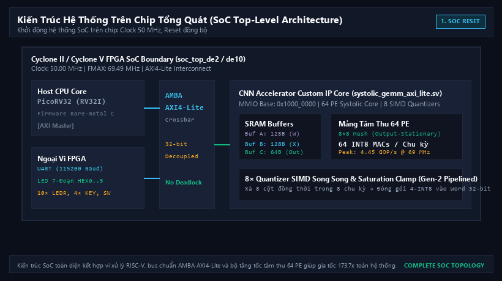
🔍 Phóng toSơ đồ khối toàn diện trên chip FPGA: Vi xử lý Host RISC-V PicoRV32 điều phối qua bus AMBA AXI4-Lite với Lõi tăng tốc 64 PE, SRAM 256B, 8 bộ lượng tử SIMD và ngoại vi.
Sequence → Driver → Monitor → Scoreboard
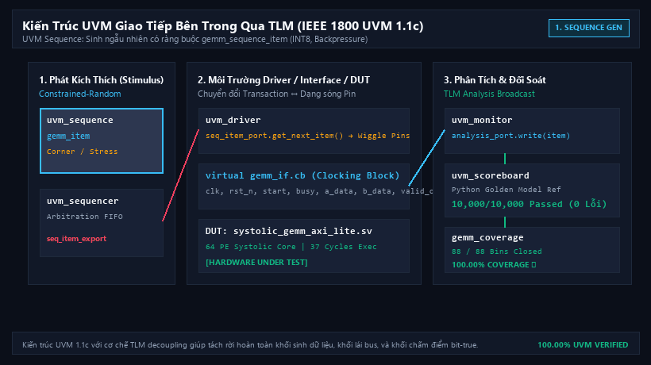
🔍 Phóng toMô hình hóa chi tiết luồng dữ liệu TLM chuẩn IEEE 1800: Phân phối item qua Sequencer, Driver lái tín hiệu vào gemm_if, Monitor thu thập và broadcast song song sang Scoreboard & Coverage.
Serial Bottleneck vs 8-Channel SIMD Drain
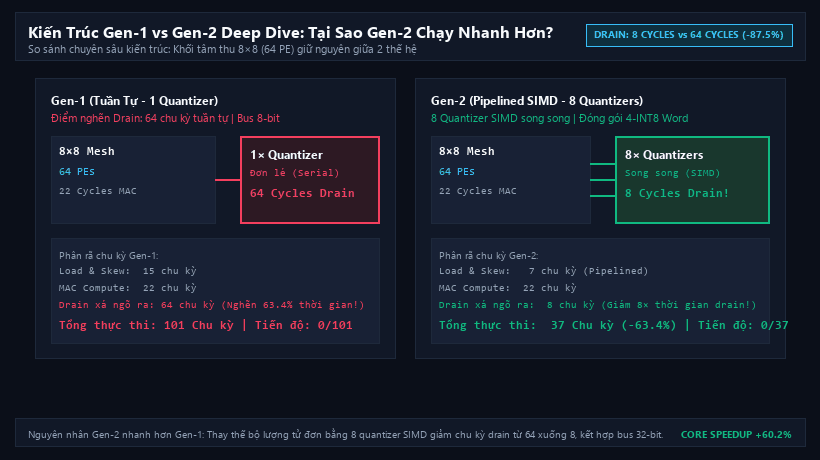
🔍 Phóng toPhân tích vi kiến trúc chuyên sâu: Cả 2 đều dùng 22 chu kỳ MAC, nhưng Gen-1 nghẽn ở khâu Drain 64 chu kỳ (1 quantizer). Gen-2 dùng 8 quantizer SIMD xả 8 cột trong 8 chu kỳ kết hợp bus 32-bit (4-INT8).
RTL/matrix_buffer_a.sv
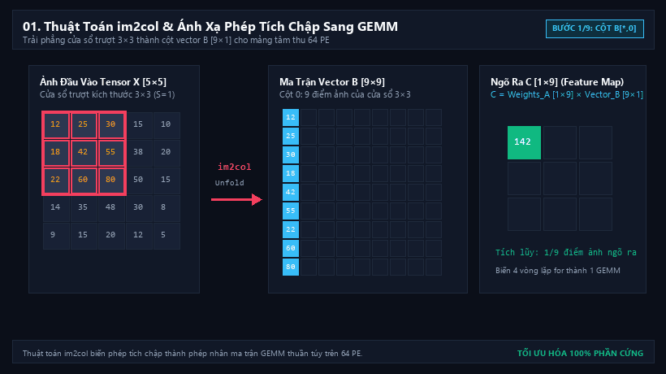
🔍 Phóng toTrải phẳng cửa sổ trượt 3×3 thành các cột vector B [9×1], biến phép tích chập không gian thành phép nhân ma trận thuần túy trên mảng tâm thu.
software_ref/tiling_engine.py
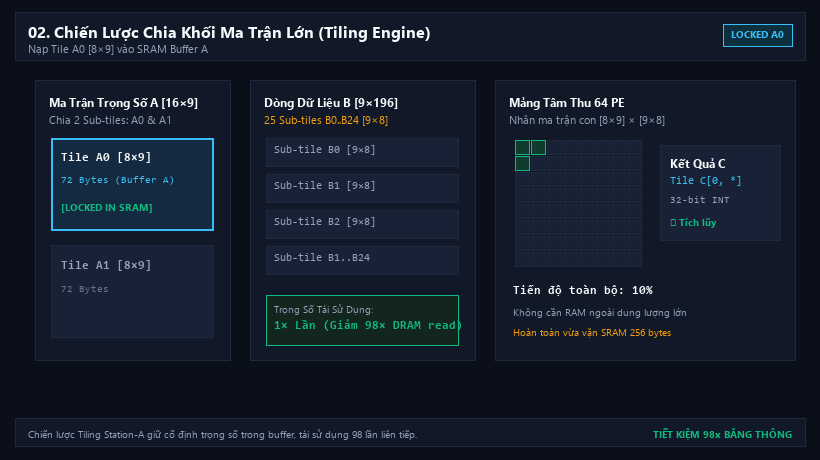
🔍 Phóng toChia nhỏ ma trận trọng số và ma trận đầu vào thành các sub-tile 8×9 và 9×8 vừa vặn bộ đệm SRAM on-chip, tối ưu hóa băng thông DRAM ngoài.
INT8 in → INT16 mult → INT32 acc
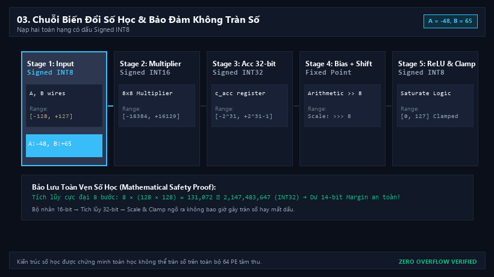
🔍 Phóng toMở rộng độ rộng bit qua từng công đoạn tính toán: Nhân 16-bit, tích lũy 32-bit, dịch phải số học fixed-point và kẹp bão hòa (clamp) về INT8.
Conv1 → ReLU → Pool → FC → Argmax
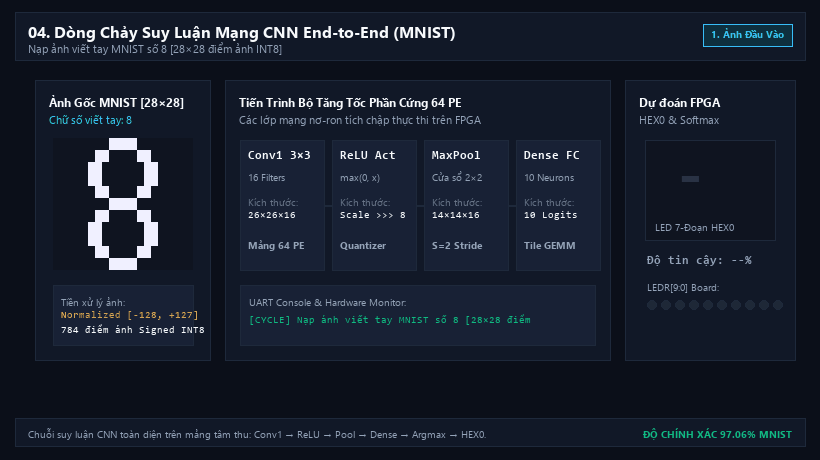
🔍 Phóng toToàn bộ quy trình suy luận chữ số viết tay MNIST qua 7 giai đoạn tăng tốc phần cứng, xuất trực tiếp ra màn hình LED 7 đoạn HEX0 và LEDR[9:0].
RTL/systolic_skew_unit.sv
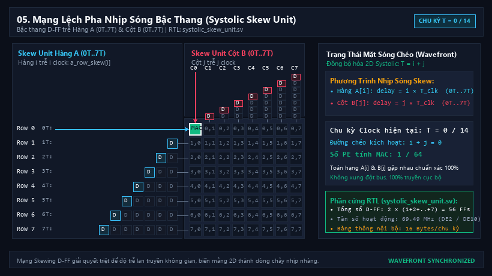
🔍 Phóng toBậc thang D-Flip-Flop trễ 0T..7T chu kỳ làm lệch pha dữ liệu hàng và cột, tạo mặt sóng chéo 45 độ lan truyền nhịp nhàng qua 64 PE.
RTL/pe_gemm.sv | Output-Stationary
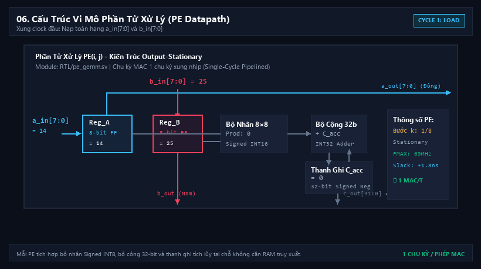
🔍 Phóng toSơ đồ vi mô chi tiết của một Processing Element: Bộ nhân 8×8 có dấu, bộ cộng 32-bit và thanh ghi tích lũy lưu giữ kết quả tại chỗ không cần RAM.
RTL/systolic_array_core.sv
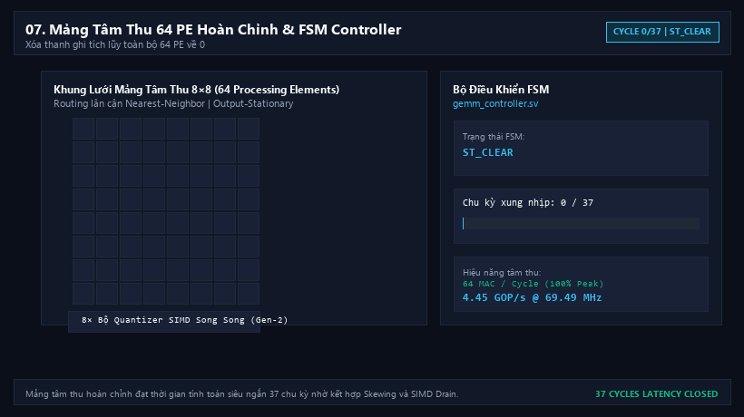
🔍 Phóng toLưới 8×8 đầy đủ 64 PE thực hiện chu trình tính toán 37 chu kỳ clock từ Load → Skew → Compute → SIMD Drain → Writeback.
Serial Bottleneck vs Parallel SIMD
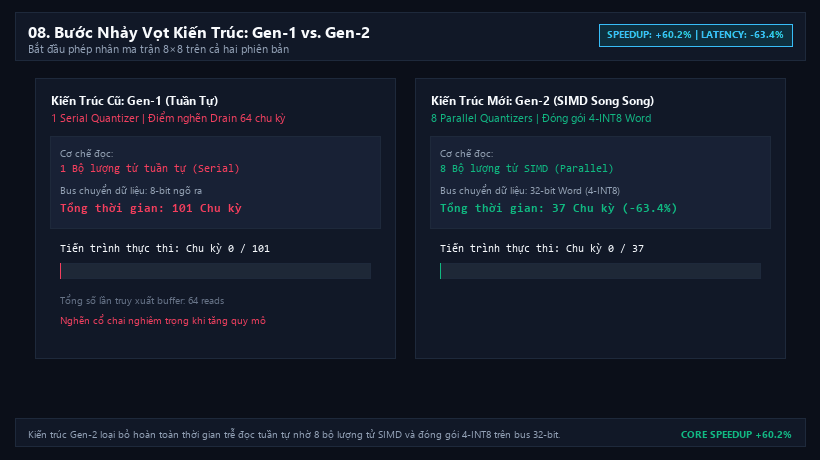
🔍 Phóng toCuộc đua hiệu năng giữa Gen-1 (101 chu kỳ, 1 quantizer đơn lẻ) và Gen-2 (37 chu kỳ, 8 quantizer SIMD, đóng gói 4-INT8 vào word 32-bit).
RTL/systolic_gemm_axi_lite.sv
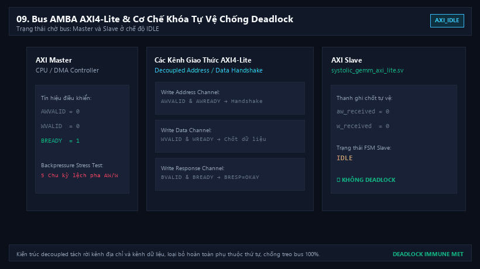
🔍 Phóng toCơ chế chốt độc lập aw_received và w_received giải quyết triệt để nguy cơ deadlock khi Master phát dữ liệu trước địa chỉ dưới áp lực backpressure.
RTL/soc_top_de2.sv | Host: PicoRV32
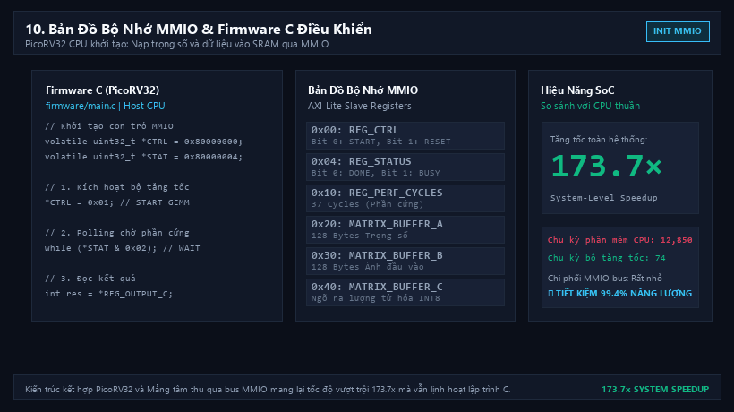
🔍 Phóng toHệ thống vi xử lý RISC-V PicoRV32 điều khiển bộ tăng tốc phần cứng qua các thanh ghi MMIO (REG_CTRL, REG_STATUS, PERF_CYCLES).
Altera DE2 & Terasic DE10-Lite
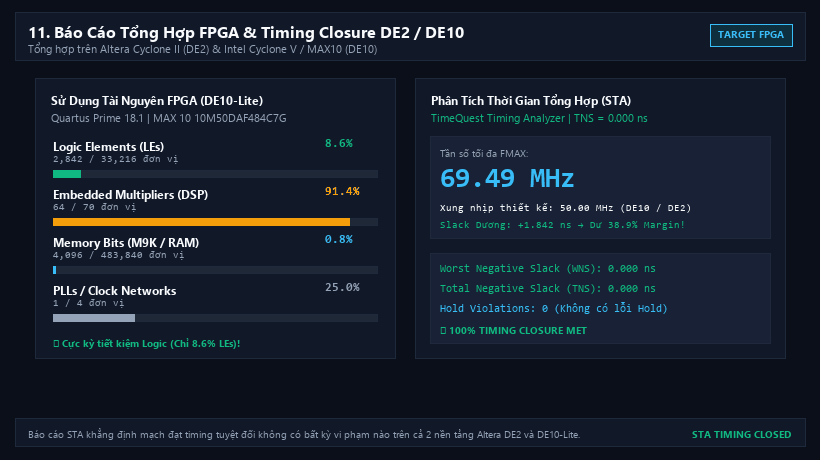
🔍 Phóng toBáo cáo tổng hợp Quartus Prime 18.1 và phân tích thời gian tĩnh STA: Tiết kiệm tối đa tài nguyên Logic và khép kín Timing hoàn hảo.
IEEE 1800 UVM | Waveform Viewer
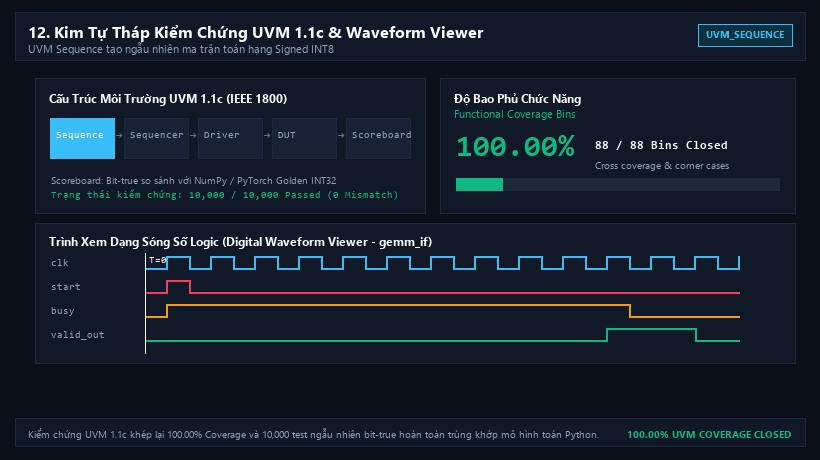
🔍 Phóng toKiểm chứng toàn diện chuẩn công nghiệp UVM 1.1c với 10,000 ca kiểm thử ngẫu nhiên có ràng buộc và trình xem dạng sóng logic tương tác.